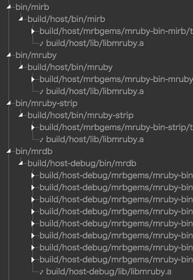
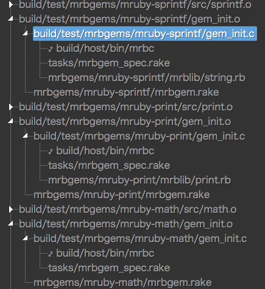
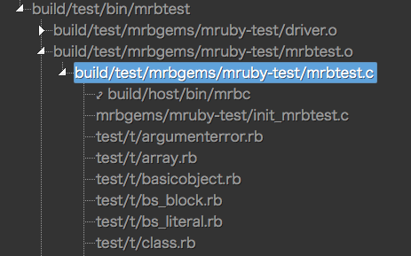

Posted on Dec 22
Building mruby is not just about compiling C sources and linking objects together but also contains some nontrivial steps like invocation of mrbc that is also built with the mruby build system. The Rakefiles of mruby are not easy read. To get a better grasp of what the task dependency structure looks like, I had to create a visual aid below.
This tree view allows us to navigate from the root all node to every task it depends. Some nodes are links to another node that is typically a library or a tool that is referred from many other tasks. This linking feature is for preventing the tree from repeating the same substructures and eventually growing too big.
Some nodes contain additional information that is displayed on the right side. Currently it contains only "defining actions" indicating the location of its definition.
By traversing the tree structure, I could make some inferences below whether they be correct or not …

mruby and mirb depend on it.mrbc does not but depends on libmruby_core.a that looks much alike libmruby.a but does not contain mrbgems.mrbtest depends on both libmruby.a and libmruby_core.a for some reason. (Would someone please tell me why?)mrbc is used to generate geminit.c
For example, mrbgems/mruby-sprintf/gem_init.o seems to be compiled from gem_init.c that depends on mrbc and a Ruby script in mrblib.
This suggests that mrbc generates a part of or all of the gem_init.c.
Browsing the C source soon reveals a byte-code looking code snippet that presumably is the output of mrbc taking the mrblib as an input.
I am not sure why gem_init.c depends on tasks/mrbgem_spec.rake.
test/t/ convert into C source to build mrbtest
It was not clear to me what the scripts in test/t directory are for.
The dependency tree gave me a hint that the mrbc tool is used to generate a part of mrbtest. The mrbtest tool depends also on mrbtest.a that seems to be a collection of gem_test.o-s. Again, by walking down into each of their subtrees, another use case of mrbc can be found.
This script (Gist) extracts the task dependencies of mruby.
MiniRake::Task.tasks would do the trick but actually it does not. I had to recursively traverse the dependency tree with the help of the prerequisites parameter of a task. The method Jstree::TaskInfo.all is written to this end and is called from the constructor of Jstree::Graph that is the main class of the above script.Jstree::Graph has nodes each of which represents one of the tasks in the Rakefile but does not have edges. The instance method construct gives edges to the dependency graph instance.to_json is called after the graph construction. Its first parameter takes the root task name. Its second parameter roots takes names of tasks that are treated as leaf nodes that stop recursive call to the method. The roots parameter is intended to serve as a list of root task names each of which is passed to the method as its first argument.The above Ruby script jstree.rb produces a JSON file jstree.json. This JSON file contains the definition of a variable json (var json = [ ... ];) that can be directly supplied to the jsTree library like below:
$("#tree-view-area").jstree({
"core": {
"data": json
}
});
Here is the excerpt of the JSON file. In the following JSON data, only the text and children parameters matter to jsTree. The info parameter is something like an extra user parameter.
The jstree function does not care about it and seems to drop such extra parameters from the object returned by the get_node API.
Luckily however, it holds the original JSON data in the original parameter. So my own info parameter can be accessed in such a way as to say data.instance.get_node(data.selected[0]).original.info in jsTree event handlers.
There is also another extra parameter jump in the output (not in the excerpt below) that is used to implement jumping from node to node.
var json = [
// snip
{
"text": "build/host/src/array.o",
"info": { "defining_actions": ["tasks/mruby_build_commands.rake:104"] },
"children": [
{
"text": "src/array.c",
"info": { "defining_actions": [] },
"children": []
},
{
"text": "build_config.rb",
"info": { "defining_actions": [] },
"children": []
}
]
},
// snip
];
2015 My gh-pages